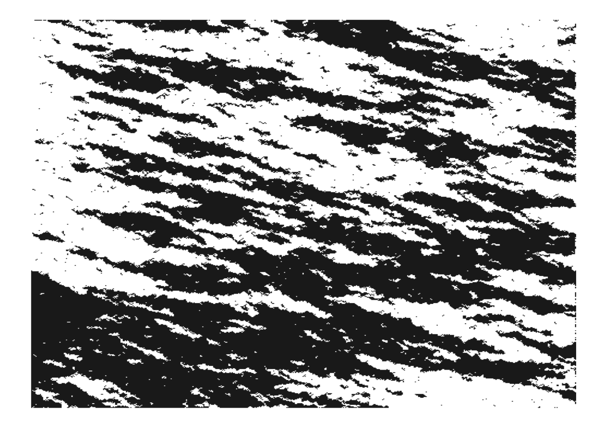
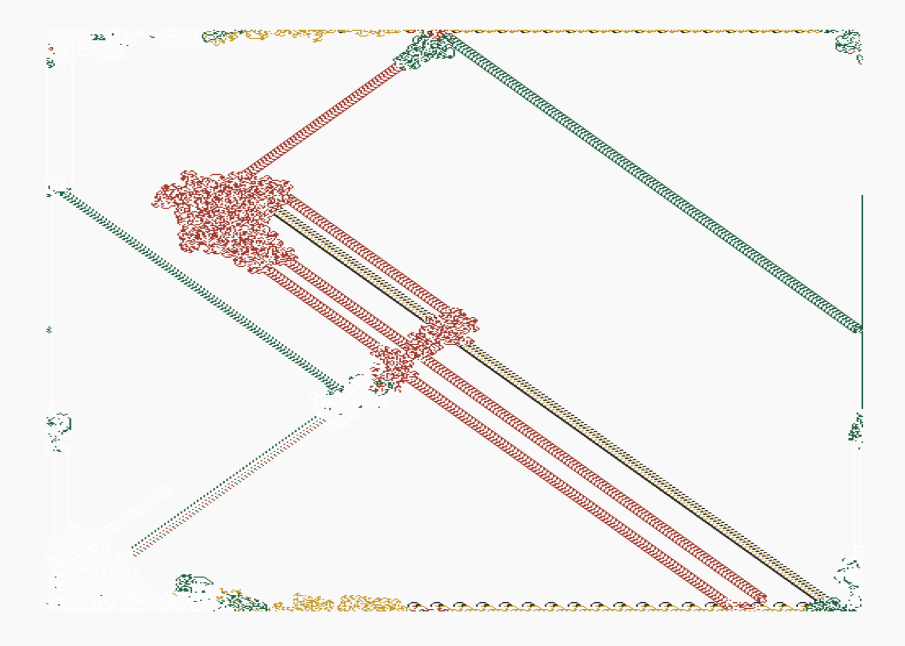
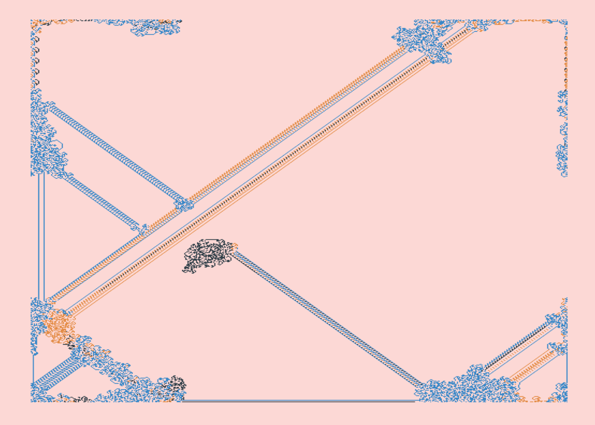
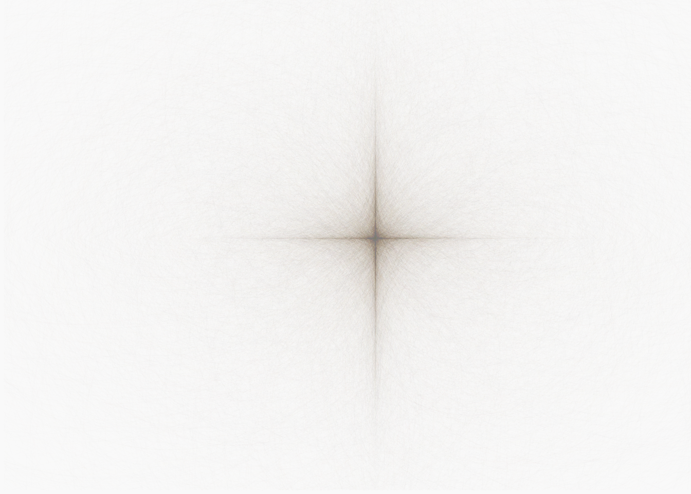
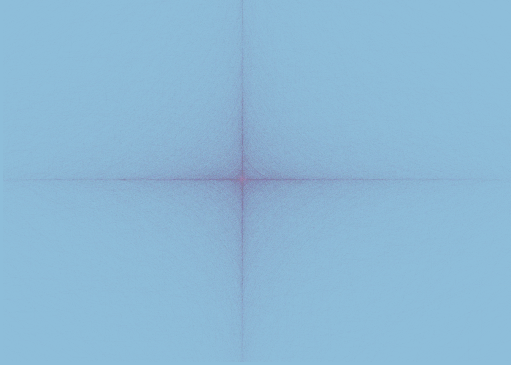
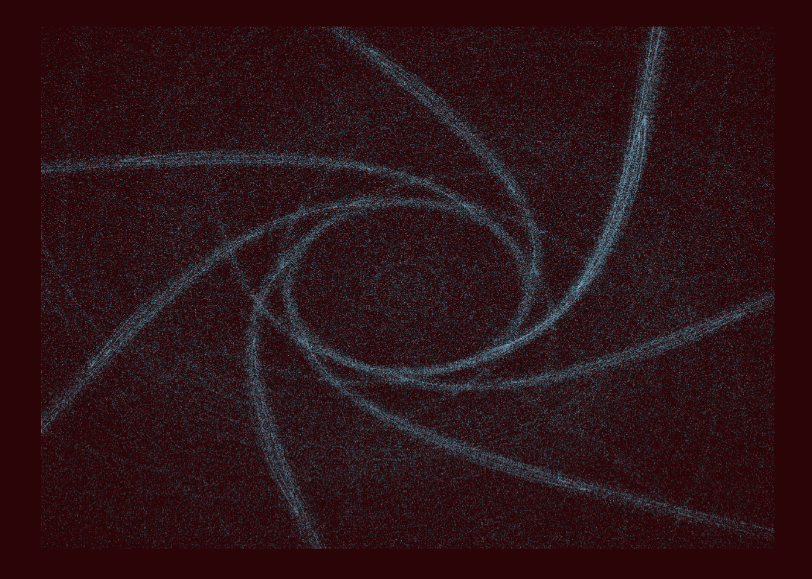
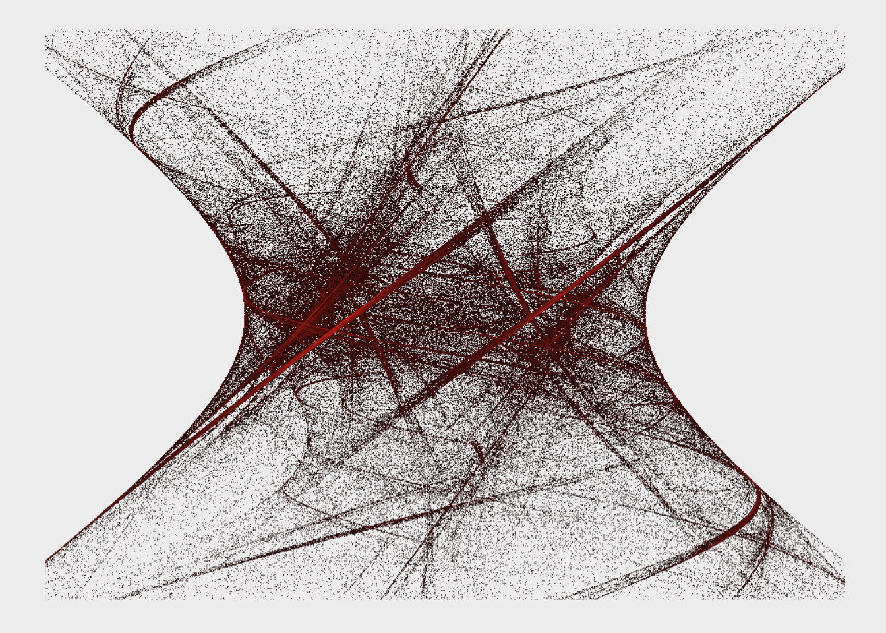
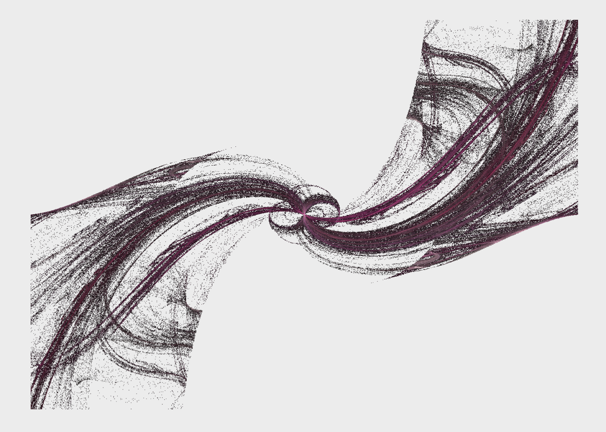
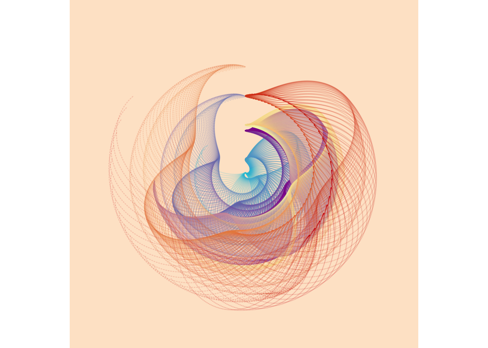
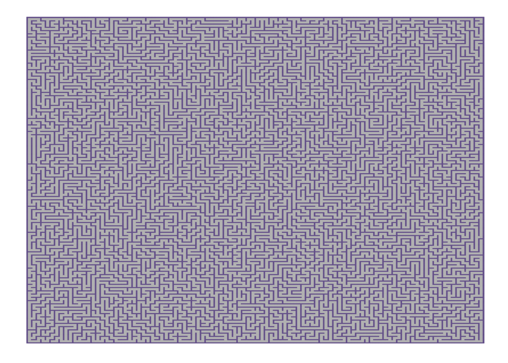

Portfolio 3
Yitong Wang
I want my portfolio to be as fun as possible. In this piece, I will
be using R to generate creative drawings. First, I want to give credit
to this github page:
https://github.com/koenderks/aRtsy
If you look at the package aRtsy description, you will see that the
author who created the package, Koen Derks, is also the author of the
website that I linked above. Let’s learn from the website!
Let’s first install the package :)
#install.packages("aRtsy")
library(aRtsy)artwork <- canvas_strokes(colors = c("black", "white"))
artwork
Cool that R can draw, but not something I was thinking.
There are a lot of drawings that this package can do. I’ll pick the
patterns that I found artistic, and try them one-by-one.
Langton’s ant
If you’d like to know what this is, check out ?canvas_ant in R. Basically, there is an initial position where you place an “ant”. The ant will turn 90 degrees and color the cells depending on whether it is colored or not and move forward. It’s like a drawing of the ant’s traces.
#website example
set.seed(1)
canvas_ant(colors = colorPalette("house"))
#My own art pieces
set.seed(50) #determine the initial position, and that you will get the same drawing everytime
canvas_ant(colors = colorPalette("jfa"), background = "#fde0dd")
I feel like mine looks better.
Cobwebs
#website example
set.seed(1)
canvas_cobweb(colors = colorPalette("tuscany1"))
#My turn
set.seed(123)
canvas_cobweb(colors = colorPalette("blossom"), background = "#9ecae1", lines = 500, iterations = 100)
#The lines default is 300, iterations 100. I adjusted it. The higher value for lines, the clearer the pattern. The generation time is positively correlated with the value set for lines.There is no winner in this, or in art.
Fractual flames
Check out ?canvas_flame for this one. There are a lot of arguments in this function. Below are my creations.
#My turn
set.seed(60)
canvas_flame(colors = "#9ecae1", background = "#390606",
variations = 4, symmetry = 6, iterations = 2000000, blend = TRUE, zoom = 2)
By far, this function is my favorite. I want to explore the variations more.
set.seed(60)
canvas_flame(colors = "#f03b20", background = "#f0f0f0",
variations = 42, symmetry = 1, iterations = 2000000, blend = TRUE)
set.seed(60)
canvas_flame(colors = colorPalette("blossom"), background = "#f0f0f0",
variations = 9, symmetry = 1, iterations = 2000000, blend = TRUE)
Functions
This function is called canvas_functions. For this, I checked out
this website in search of a formula:
https://github.com/cutterkom/generativeart
my_formula <- list(
x = quote(runif(1, -1, 1) * x_i^2 - sin(y_i^2)),
y = quote(runif(1, -1, 1) * y_i^3 - cos(x_i^2))
)
set.seed(1821)
canvas_function(colors = colorPalette("neon2"), background = "#fee6ce", by = 0.01,
polar = TRUE, formula = my_formula)
Segments
In this function, there is an argument “p” which sets the probability of drawing a vertical line segment. This is really neat.
set.seed(90)
canvas_segments(colors = colorPalette("house"), background = "#f0f0f0", n = 600,
p = 0.5, H = 0.1, size = 0.3)
I tried a couple times, and I think that p = 0.5 is the best, so that you have an equal amount of vertical and horizontal lines. This will make your drawing very beautiful.
Mosaics
This type of drawing is very popular and I’ve seen quite a lot of them. This function has only 3 arguments.
set.seed(1)
canvas_mosaic(colors = c("#756bb1", "#2c7fb8", "#fde0dd", "#f0f0f0"), n = 1000, resolution = 1200)
Mazes
set.seed(990)
canvas_maze(
color = "grey", walls = "#756399", background = "white",
resolution = 100, polar = FALSE
)
This looks like a very beautiful carpet.
This is so fun! You can create art pieces if you are familiar with all these functions and arguments. For every type of pattern, I checked out the functions in the Help section and it was indeed very helpful. When creating these drawings, I thought of a place where we can post our art pieces: LinkedIn banner. I think it is pretty fancy, and it shows that you are interested in R!